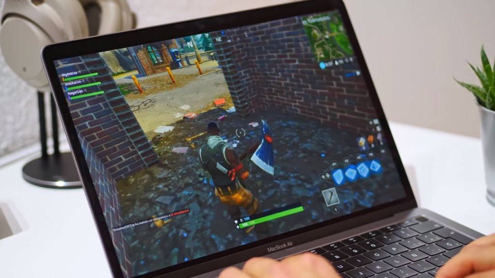

VideoJuegos
Fortnite Macbook
Fortnite Battle Royale es un videojuego gratuito perteneciente al género de Battle Royale desarrollado y publicado por Epic Games. Fue lanzado como un título con acceso anticipado para Microsoft Windows, macOS, PlayStation 4, Xbox One el 26 de septiembre de 2017, para iOS el 2 de abril de 2018, y para Android el 9 de agosto. Fue lanzado en la consola Nintendo Switch el 12 de junio de 2018.1 Es un spin-off de Fortnite: Salvar el Mundo, un cooperativo juego de supervivencia con elementos de construcción.